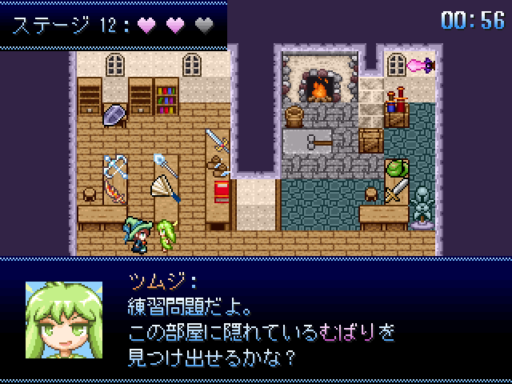

ドリームメタモルかくれんぼ

作品メニュー
詳細情報
- 作者
- 雨水葉月
- ジャンル
- かくれんぼ＋α
- ツクール
- RPG Maker 2003
- 配信/投稿
- 可/可
- コメント
今回の紅白に向けてRPGも作っていたのですが、間に合いそうにないので先月思いついたやるゲで参加します
夢の魔力を核として生まれた魔法具現化「ドリームバリア」(むばり)は、 ある時は人目に付きにくい高所や物陰から、 ある時はその夢に登場する人物や物品に姿形を変えながら、 数多くの夢世界を渡り歩き、見守り続けてきた。
そんなむばりの話を聞いて、魔法具現化大好きな魔法使いの少女「アシュリー」は、 夢の中で隠れているむばりを探し出してみたいと言い出した。 そして彼女達につきまとっているイタズラ大好き精霊「ツムジ」が、 「アシュリーの夢の中にむばりが隠れて、それをアシュリーとツムジが協力して探し出す」 という不思議な「かくれんぼ」を思いつき、3人で夢世界で遊ぶことに……
…といった感じのストーリーから始まるかくれんぼゲーム。 アシュリーが自力で、あるいはツムジからヒントをもらいながら、 制限時間以内に様々な方法や姿で隠れているむばりを探し当てることができれば勝ち。
変身/形状変化系の要素が結構出るゲームになりそうなので苦手な人はご注意ください。
- 管理人から一言
 かくれんぼと形状変化の夢のコラボだお！（ドリームバリアだけに）
かくれんぼと形状変化の夢のコラボだお！（ドリームバリアだけに）